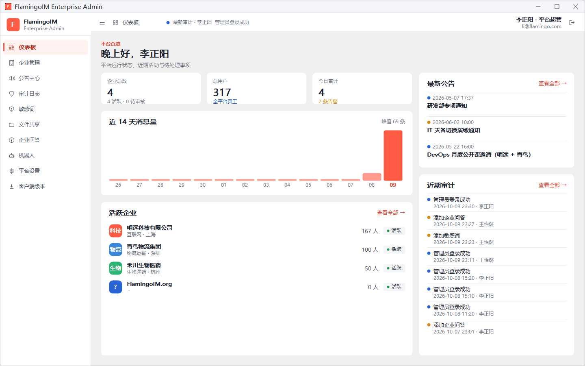
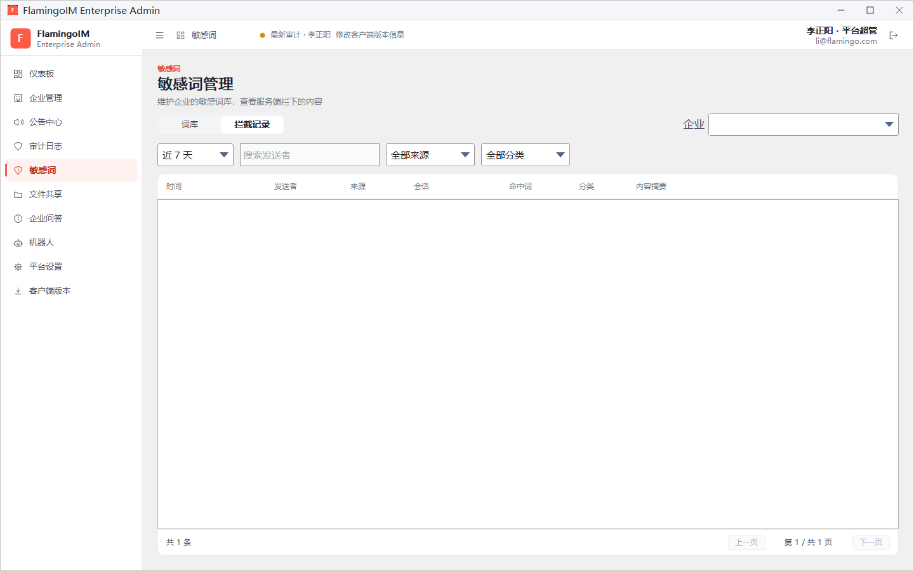
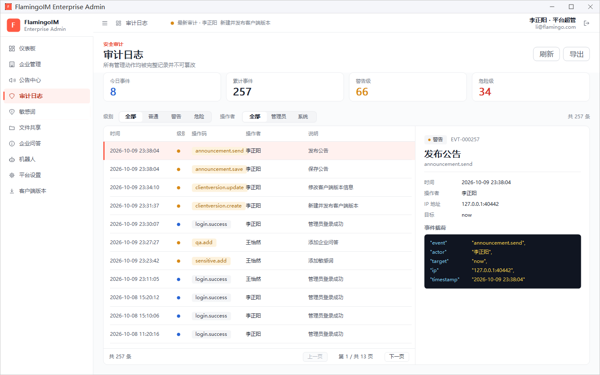

平台总览
平台超级管理员负责整个 FlamingoIM 平台：开通和审核入驻企业、发布面向所有企业的公告、发布客户端新版本。本章介绍超管登录后看到的界面与企业管理员有什么不同，以及平台总览仪表板。
- 适用：平台超级管理员
- 需要：平台超级管理员账户（演示账号为李正阳 li@flamingo.com）
登录与导航
平台超级管理员使用的是同一个管理控制台程序，登录方法、网络设置与企业管理员完全相同，见「登录与仪表板」。登录后顶栏右侧显示「李正阳 · 平台超管」。
与企业管理员相比，左侧导航有以下不同：
| 导航项 | 说明 | 详见 |
|---|---|---|
| 企业管理 | 取代企业管理员的「本企业」，列出平台上的全部企业，可以新增、审核、停用、删除企业 | 企业管理 |
| 公告中心 | 超管独有，向企业、部门或个人发布平台公告 | 平台公告 |
| 客户端版本 | 超管独有，发布 PC 客户端升级包 | 客户端版本与自动升级 |
其余的审计日志、敏感词、文件共享、企业问答、机器人和平台设置与企业管理员相同，用法见第二部分各章。
平台总览仪表板
超管登录后默认打开的仪表板标题是 平台总览，显示整个平台的运行状态：

- 企业总数：平台上的企业数量，下方显示其中活跃和待审核的数量，例如「4 活跃 · 0 待审核」。有企业待审核时，请到企业管理中处理。
- 总用户：全平台的员工总数。
- 今日审计：今天全平台产生的审计事件数，以及其中的告警数。
- 近 14 天消息量：全平台最近 14 天每天的消息条数。
- 活跃企业：列出活跃企业的名称、行业 · 地区和人数。
- 最新公告：最近发布的平台公告。
- 近期审计：全平台最近的管理操作，包括各企业管理员和超管自己的操作。
活跃企业、最新公告和近期审计右上角的 查看全部 → 分别跳到企业管理、公告中心和审计日志页面。
按企业操作的页面
超管管理着多家企业，所以敏感词、企业问答、机器人这类按企业区分的页面，要先在页面右上角的 企业 下拉框里选择一家企业，才能查看和修改该企业的数据：

- 敏感词、企业问答、机器人：必须先选企业，没有选择时页面提示先选择企业。选好之后的操作与企业管理员完全相同，见「敏感词」、「企业问答」和「企业机器人」。
- 文件共享：企业下拉框里多一项「全部企业」，可以一次查看所有企业的共享与审计，详情里的「所属企业」显示共享属于哪家企业，见「文件共享管理」。
- 组织架构、服务号、在线用户、功能开关：在企业管理中打开某家企业的详情后操作，见「企业详情」。
审计日志
超管的审计日志能看到全部企业的管理操作，以及超管自己的操作，例如发布公告、新建并发布客户端版本。筛选、查看详情和导出的方法与企业管理员相同，见「审计日志与平台设置」。
